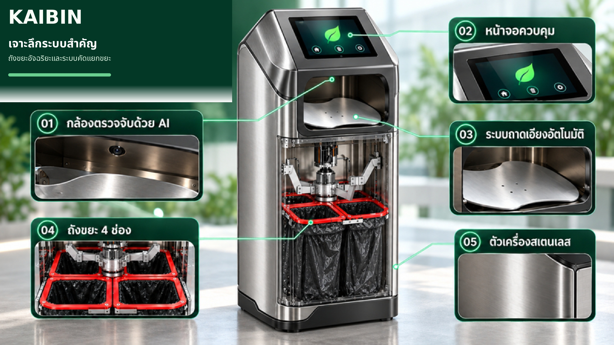
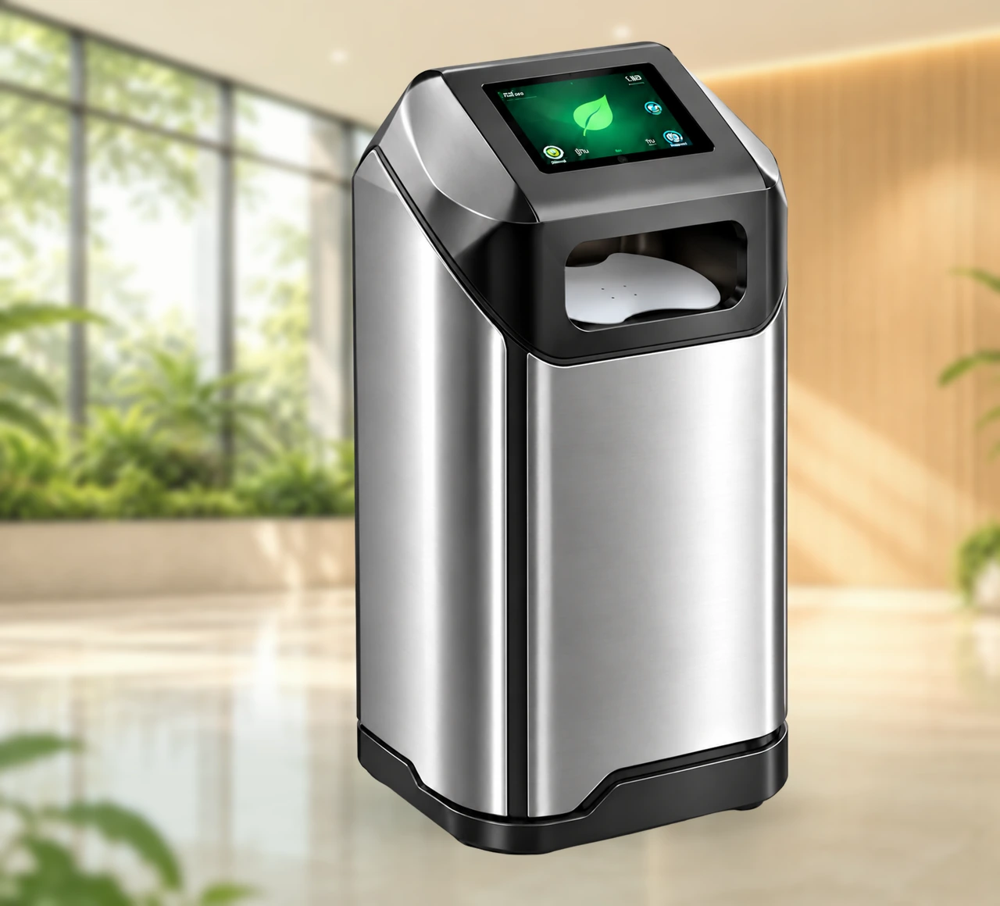

กล้อง AI
ตรวจจับและจำแนกประเภทขยะก่อนเข้าสู่กลไกคัดแยก
KAIBIN SMART BIN
ช่วยคัดแยกขยะตั้งแต่จุดทิ้ง ด้วยกล้อง AI ตรวจจับประเภทขยะ ทำงานร่วมกับหน้าจอควบคุมและถาดเอียงอัตโนมัติ เพื่อส่งขยะไปยังช่องรองรับภายในเครื่อง 4 ช่อง
 02 / KAIBIN SMART BIN
02 / KAIBIN SMART BINระบบทำงานร่วมกันตั้งแต่การตรวจจับขยะ ไปจนถึงการส่งขยะเข้าสู่ช่องรองรับภายในตัวเครื่อง

ตรวจจับและจำแนกประเภทขยะก่อนเข้าสู่กลไกคัดแยก
แสดงผลและเป็นส่วนควบคุมการทำงานของตัวเครื่อง
ช่วยนำขยะไปยังช่องรองรับที่ระบบกำหนด
แยกเก็บขยะภายในเครื่อง เพื่อสะดวกต่อการนำไปจัดการต่อ
ตัวเครื่องสเตนเลสตามภาพผลิตภัณฑ์ในเอกสารนำเสนอ
ลำดับการทำงานเบื้องต้นตามแนวคิดที่ปรากฏในเอกสารนำเสนอ
ใส่ขยะทีละชิ้นตามวิธีที่บริษัทแนะนำ
กล้องตรวจสอบประเภทขยะก่อนเข้าสู่กลไกคัดแยก
ถาดเอียงอัตโนมัติช่วยส่งขยะไปยังช่องที่ระบบกำหนด
ขยะถูกแยกลงในช่องรองรับภายในเครื่อง เพื่อนำไปจัดการต่อ
หมายเหตุ: ประเภทขยะที่รองรับและวิธีใช้งานจริงควรตรวจสอบกับบริษัทและคู่มือผลิตภัณฑ์ก่อนติดตั้งหรือใช้งาน

เอกสารที่ได้รับมีหน้าคั่นคลิปถังขยะ แต่ไม่มี URL หรือรหัสวิดีโอเฉพาะรุ่น จึงยังไม่ฝังคลิปที่อาจไม่ตรงกับผลิตภัณฑ์ สามารถติดตามสื่อของ CIVIO ได้ทางช่อง YouTube
เปิดช่อง YouTube CiviO Thailandติดต่อทีมงานเพื่อสอบถามสเปก ประเภทขยะที่รองรับ และการสาธิตผลิตภัณฑ์